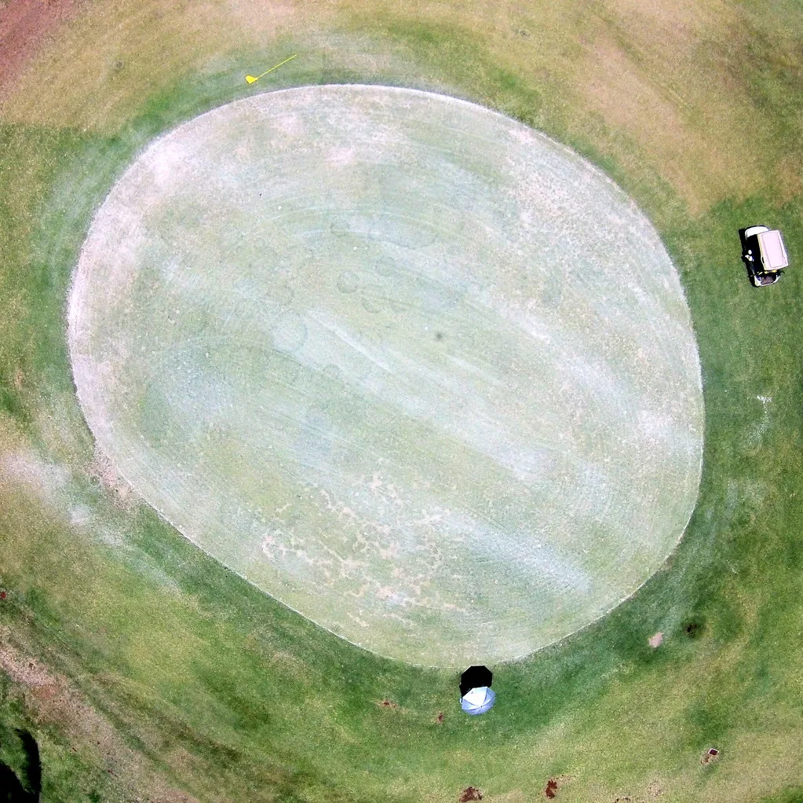

대구 상가 붕괴 당일 '골프 논란'…청 "현장서 사고 보고받아"
이재명 대통령이 지난 10일 가족과 함께 태릉컨트리클럽을 찾아 골프를 친 사실이 11일 알려지면서 정치권에 논란이 일고 있다. 공교롭게도 같은 날 오전 대구 북구의 한 상가건물에서 천장 붕괴 사고가 발생해 38명이 다쳤는데, 대통령이 사고 당일 골프장에 머물렀다는 사실이 뒤늦게 공개되자 야권을 중심으로 비판이 쏟아졌다.
청와대는 11일 브리핑을 통해 대통령이 골프장에 있던 중 대구 사고 소식을 보고받았다고 설명했다. 청와대에 따르면 이 대통령은 김종철 경찰청장 직무대행과 전화 통화를 갖고 인명피해 규모와 사망자 여부, 부상 정도 등을 자세히 확인한 뒤 관계기관에 인명 구조에 총력을 다하고 신속하고 안전하게 사고를 수습하라고 지시했다. 청와대는 이를 공개하며 비공개로 진행된 대통령의 개인 일정이 정치적 공방의 소재로 활용되는 데 유감을 표했다.

논란의 시작은 국민의힘 주진우 의원이었다. 주 의원은 이 대통령이 10일 태릉CC에서 대통령 전용 클럽하우스를 이용해 골프를 쳤다는 제보를 받았으며 이를 뒷받침하는 사진과 영상을 확보했다고 밝혔다. 그는 대구에서 대형 사고가 벌어진 당일 대통령이 골프장에 머문 사실을 문제 삼으며 '황제 골프'라는 표현까지 써가며 날을 세웠다. 야권에서는 재난 상황에 대한 대통령의 대응 태세 전반에 의문을 제기하는 목소리도 뒤따랐다.
이에 더불어민주당 측에서는 대통령의 통상적인 휴식까지 정쟁의 대상으로 삼는 것은 과도하다는 반론이 나왔다. 박지원 의원은 "대형 사고를 미리 알고 있었다면 대비를 했을 것이지 골프를 하겠느냐"며 "대통령도 사람인 만큼 아무리 성실하더라도 휴식이 필요하다"고 말했다. 여당 내에서는 사고 발생 시점을 예측할 수 없는 상황에서 대통령의 사적 일정 자체를 문제 삼는 것은 적절하지 않다는 취지의 언급도 이어졌다.
이번 논란은 공직자의 사적 일정과 재난 대응이 겹칠 때마다 반복되는 익숙한 논쟁 구도를 다시 불러왔다. 과거에도 재난이나 사고가 발생한 시점에 고위 공직자의 동선이 뒤늦게 알려지며 정치적 공방으로 이어진 사례가 여러 차례 있었던 만큼, 이번 사안 역시 사실관계를 둘러싼 공방보다는 대응의 적절성을 따지는 방향으로 번질 가능성이 있다.
청와대는 대통령이 보고를 받은 즉시 관계기관에 구체적인 지시를 내렸다는 점을 강조하며, 골프장에 머물렀다는 사실 자체보다 사고 발생 이후 대응 조치에 초점을 맞춰야 한다는 입장을 내놓고 있다. 반면 야권은 대통령의 평소 일정 공개 방식과 경호·의전 관행 전반에 대한 문제 제기로 논의를 확장하려는 움직임을 보이고 있어, 이번 사안이 향후 정치 일정에서도 쟁점으로 이어질지 주목된다.
공교롭게도 이번 논란이 불거진 12일은 국회 행정안전위원회가 경찰청을 대상으로 국정감사를 진행하는 날이기도 하다. 대통령에게 상황을 보고한 당사자가 바로 김종철 경찰청장 직무대행이었던 만큼, 야권 의원들이 국감장에서 당일 보고 경위와 초기 대응 체계를 추가로 캐물을 가능성이 거론된다. 재난 발생 시 보고 라인이 얼마나 신속하고 정확하게 작동했는지가 이번 공방을 넘어 제도적 점검의 소재로 다뤄질 수 있다는 관측도 나온다.